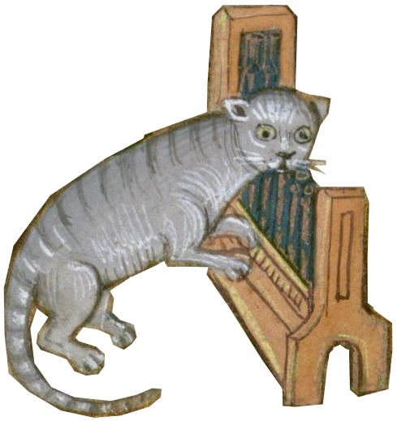
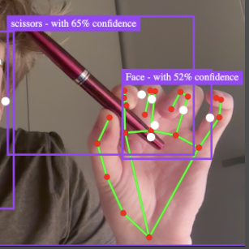

Composer | Performer | Researcher
Website under construction, you are seeing a temporary DIY one, where you can find information about me, a brief portfolio, links to social media pages and contacts.

Based in Vertemate, Italy.
I write and perform electroacoustic music & work with mixed media, mainly digital.
I am a doctoral researcher in "Composition and Performance" at Pescara Conservatory (2025/2028).
My research speaks about the aesthetics of production in contemporary music, or: social structures, symbolic violence and entitlement in post-media art.
~~~~~ currently cooking ~~~~~